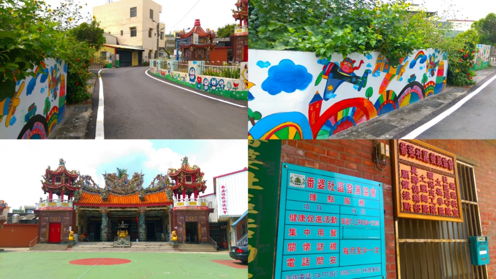
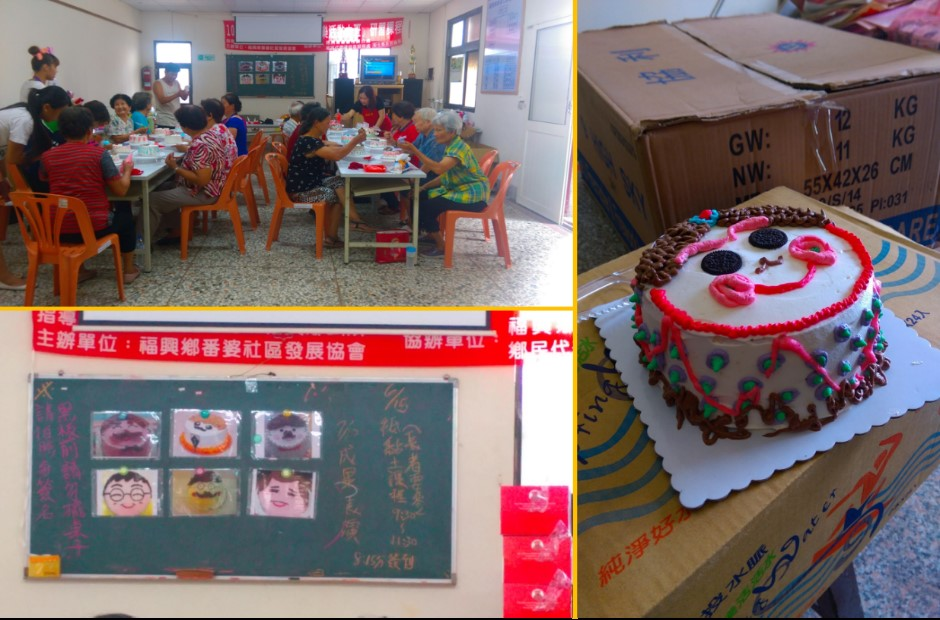

今天來到番婆社區，隨著車子駛入社區，沿路都可以看到外牆顏色鮮豔、充滿童趣的彩繪，豐富了單調的街景。今天是借用龍星宮來辦理登錄作業，才剛抵達就已經有兩三個阿北在等了，又是一陣手忙腳亂，陸陸續續又有幾個村民來辦。


這兩天都是在充滿台語的環境，雖然還是不太會講，但已經能大略聽懂幾句話了，有時候還是會對自己沒什麼自信，怕發音不標準或是講錯，所以都不太敢講。活動中心外牆牌子上寫的社區發協會的據點服務與社區活動，可以知道這個社區非常活絡，跟昨天的秀厝社區呈現截然不同的氛圍。大約九點多活動中心就聚集了許多阿公阿嬤來上蛋糕的擠花裝飾課程，此起彼落的笑聲充斥著整個活動中心。